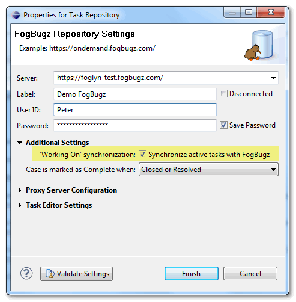
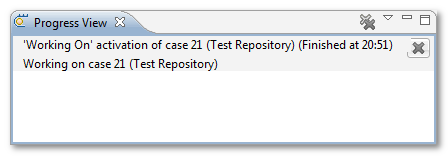
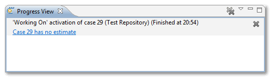
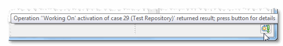

FogBugz Case Activation
FogBugz 6 introduced time tracking (also called ‘Working On’), feature that allows you to tell FogBugz server which case you are working on, and FogBugz can then use this information to predict ship date of your product.
Foglyn automatically synchronizes active case in Eclipse with time tracking feature in FogBugz. It is possible to disable
this synchronization in Repository Properties by disabling ‘Working On’ synchronization option.

Status of case activation is displayed in Progress View.

When case activation fails, Progress View shows the reason of failure (Case 29 has no estimate).

Failed case activation can also be seen in job result icon, which is usually in right-bottom corner of Eclipse. This icon
represents finished job with some result, in this case it is failed activation job.

Deactivating case in the Eclipse will also deactivate this case in FogBugz, if it was activated before.
Related Topics: